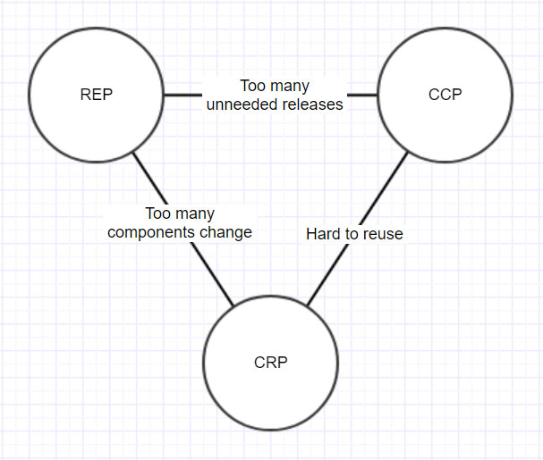
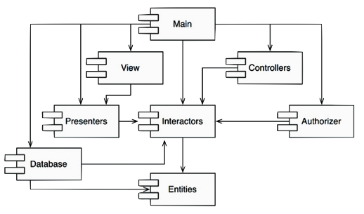
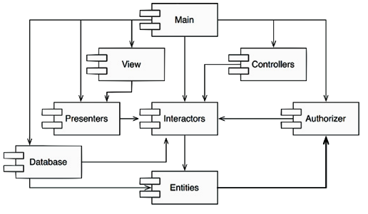
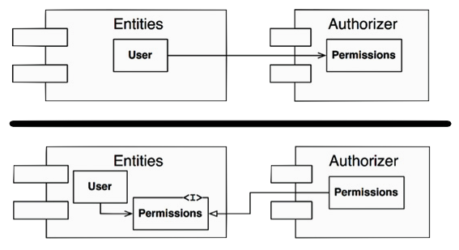
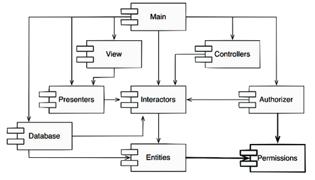

![one]() $\implies$ ahora
$\implies$ ahora Database es mucho más difícil de liberar, porque:Las aplicaciones crecen en tamaño y complejidad
Se requiere algún tipo de organización
La clase es de un grano demasiado fino como unidad de organización
En UML, Java y otros lenguajes se da el concepto de paquete (package)
En general puede hablarse de "agrupaciones lógiclas de declaraciones que pueden importarse en otros programas" (componentes)
La arquitectura de un sistema software es la forma dada al sistema por aquellos que lo construyen. La forma es la división del sistema en componentes, la disposición de esos componentes y la manera en que se comunican entre sí.
Bob Martin
La finalidad de la arquitectura es facilitar el desarrollo, despliegue, operación y mantenimiento del sistema software.
A module should be responsible to one, and only one, user/stakeholder/actor. ––Robert C. Martin (2018): Clean Architecture: A Craftsman's Guide to Software Structure and Design.
Bob Martin's chapter 7
Bob Martin's chapter 8
Bob Martin's chapter 9
Al pricipio de la OO, el principio LSP nació ligado al uso de la herencia para el diseño software. Hoy día, se considera más ligado al diseño de interfaces e implementaciones:
LSP es aplicable porque habrá usuarios que dependan de interfaces bien definidas y en la posibilidad de sustitución de sus implementaciones.
purplecab.com/driver/Bobpurplecab.com/driver/Bob
/pickupAddress/24 Maple St.
/pickupTime/153
/destination/ORD
destif (driver.getDispatchUri().startsWith("acme.com")) ...| URI | Dispatch format |
|---|---|
acme.com |
pickupAddress/%s/pickupTime/%s/dest/%s |
*.* |
pickupAddress/%s/pickupTime/%s/destination/%s |
La LSP debería extenderse hasta el nivel arquitectónico. Una violación de la posibilidad de sustitución puede contaminar la arquitectura de un sistema con mecanismos extra.
Bob Martin's chapter 10
ISP = es pernicioso depender de módulos que contienen más de lo que se necesita. Esto es cierto también a nivel arquitectónico
Supongamos que un sistema $S$ quiere incluir un framework $F$ y que los creadores de $F$ lo han acoplado a una base de datos $D$:
$S \rightarrow F \rightarrow D$
Si $D$ contiene características que $F$ no usa y que a $S$ tampoco le interesan;
Depender de algo que trae "equipaje" que no se necesita puede ser origen de problemas.
Bob Martin's chapter 11
REP = Reuse/Release Equivalente Principle CCP= Common Closure Principle CRP= Common Reuse Principle
The granule of reuse is the granule of release. Only components that are released through a tracking system can be effectively reused.
Robert C. Martin
$\implies$ Las clases y módulos de un componente deben formar un grupo cohesionado
¿Se reutiliza código cuando se hace copia-pega? ¡No!
$\implies$ El autor debe distribuir/hacer entregas regulares de distintas versiones del componente/biblioteca.
Reunir en componentes aquellas clases que cambian por los mismos motivos y al mismo tiempo. Separar en componentes distintos aquellas clases que cambian en momentos distintos y por motivos diferentes.
Robert C. Martin
The classes in a package should be closed together against the same kinds of changes. A change that affects a package affects all the classes in that package.
Robert C. Martin
La mantenibilidad suele ser más importante que la reusabilidad
CCP es un intento de tener junto todo lo que es probable que cambie por una misma razón
Como no es posible garantizar al 100% el cierre de OCP... el cierre debe ser estratégico $\implies$ diseñar los sistemas para que estén cerrados a los cambios más probables que podamos anticipar.
No obligar a los usuarios de un componente a depender de cosas que no necesitan
Robert C. Martin
The classes in a package are reused together. If you reuse one of the classes in a package, you reuse them all.
Robert C. Martin
¿Qué clases ubicar en cada paquete?
Ejemplo: contenedor + iteradores
Cuando alguien decide usar un paquete, se crea una dependencia sobre todo el paquete.
CRP es la versión genérica del ISP:
 Cada arco describe el coste de abandonar el principio del vértice opuesto:
La postura en el triángulo de tensiones debe ser coyuntural, pues las preocupaciones del equipo de desarrollo pueden cambiar con el tiempo.
ADPP: Acyclic Dependencies Principle
There must be no cycles in the coimponent dependency graph
Robert C. Martin
El grafo de dependencias entre components debe ser un DAG (Directed Acyclic Graph)
Hay que particionar el entorno de desarrollo en componentes "liberables" por separado.
Varios equipos de trabajo distribuidos pueden hacer cambios a cada componente por separado, lo que puede inducir nuevas dependencias entre componentes.
$\implies$ Hay que gestionar la estructura de dependencias de los paquetes

@startuml
skinparam component {
backgroundColor white
borderColor #FF6655
FontName Consolas
ArrowColor #FF6655
}
[Main] as Main
[Database] as Database
[View] as View
[Presenters] as Presenters
[Interactors] as Interactors
[Controllers] as Controllers
[Authorizer] as Authorizer
[Entities] as Entities
Main --> Database
Main --> Presenters
Main --> View
View --> Presenters
Main --> Interactors
Main --> Controllers
Main --> Authorizer
Presenters --> Interactors
Authorizer --> Interactors
Database --> Interactors
Database --> Entities
Interactors --> Entities
Controllers --> Interactors
@enduml
¿A quién afecta la liberación de una nueva versión de Presenters por sus responsables?
Solo Mainy View se ven afectadas
¿A quiénes afecta la ejecución de un test en Presenters?
Interactors y Entities (deberían ser mocked)
¿En qué orden se libera una nueva versión del sistema?
Entities, Database & Interactors, Presenters, View & Controllers & Authorizer
Entities $\rightarrow$ Authorizer Entities::User usa la clase Autohizer::Permissions)
Problemas:
Database saben que para liberarla, deben hacerla compatible con EntitiesDatabase debe ser ahora compatible también con AuthorizerAuthorizer depende de Interactors $\implies$ ahora Database es mucho más difícil de liberar, porque:
Entities + Authorizer + Interactors se convierten en un solo componente![two]() $\implies$ el desarrollo de pruebas es más difícil:
$\implies$ el desarrollo de pruebas es más difícil:
Entities, antes hay que construir e integrar Authorizer y Interactors (más mocks!)Dos posibles mecanismos:
UserEntitiesAuthorizer
Permissions) del que dependan ambos (Authorizer y Entities)
La segunda alternativa puede provocar jitters (lo que hacen los gremlins) en presencia de requisitos cambiantes: la estructura de dependencia jitters and grows
Leer más sobre continuous delivery y herramientas de continuous integration: